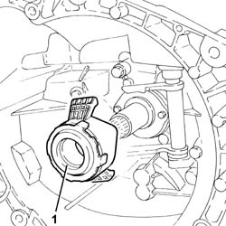
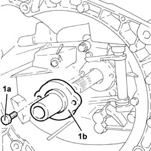
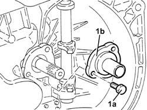

2110C20 seals for gear input shaft - replace with gearbox removed
- Path
- Procedures > 21 GEARBOX > 2110 MANUAL GEARBOX AND DIFFERENTIAL > 2110C gear cases and covers of manual gearbox with differential > 2110C20 seals for gear input shaft - replace with gearbox removed
- Kind
- repair procedure (removal / refitting; the operation number is the code)
- Applies to
- engines: 2.0 TS, 3.2 V6, 1.9 JTD 16V; all production periods
- Interactive page
- https://sloeber94.github.io/elrnDB-a147/en/#/3025124
Applies to: engines: 2.0 TS; all production periods; only with equipment: Cambio robotizzato
 Removing
Removing
 Refitting
Refitting1. Rotate the thrust bearing in a clockwise direction and remove it.

Applies to: engines: 2.0 TS; all production periods; only with equipment: Cambio robotizzato
1. Undo the bolts (1a) and remove the cover incorporating the gasket for the gearbox input shaft (1b).

Applies to: engines: 2.0 TS; all production periods; only with equipment: Cambio robotizzato
Refitting
RemovingPlace the cover incorporating the gasket for the gearbox input shaft back in its housing and secure it using the bolts.
Place the thrust bearing back in its housing.
Applies to: engines: 3.2 V6; all production periods
Removing
Refitting1. Undo the bolts (1a) and remove the cover incorporating the gasket for the gearbox input shaft (1b).

Applies to: engines: 3.2 V6; all production periods
Refitting
RemovingPlace the cover incorporating the gasket for the gearbox input shaft back in its housing and secure it using the bolts.
Applies to: engines: 1.9 JTD 16V; all production periods
Removing
Refitting1. Undo the bolts (1a) and remove the cover incorporating the gasket for the gearbox input shaft (1b).
Applies to: engines: 1.9 JTD 16V; all production periods
Refitting
RemovingPlace the cover incorporating the gasket for the gearbox input shaft back in its housing and secure it using the bolts.